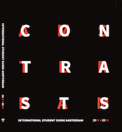

About AMS X Activity
AMS X Activity is an app that's been created by a student of CMD (Communication and Multimedia Design) at the HvA. The student came through research to the knowledge that a lot of International Students were struggling with where to go in their spare time or where activities were being held in the city. This app is a solution to that problem. For everyone who wants to take a quick look while on the go. With this app you can very quickly see which activities are being held where, how much they cost and how you actually can get there. The activities are varied very much and this webapp has a diverse collection of the activities that are planned, so that we have anything for everyone.
The book
This webapp is a complement to the book that International students receive at the beginning of their study time in Amsterdam. And this webapp is mostly an important extra to Chapter 5, Modern X Traditional. In this webapp there are more holidays and activities than in the book.